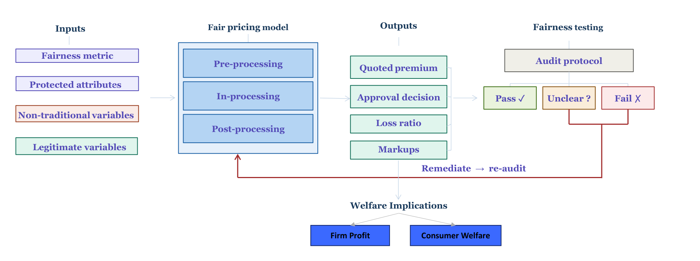
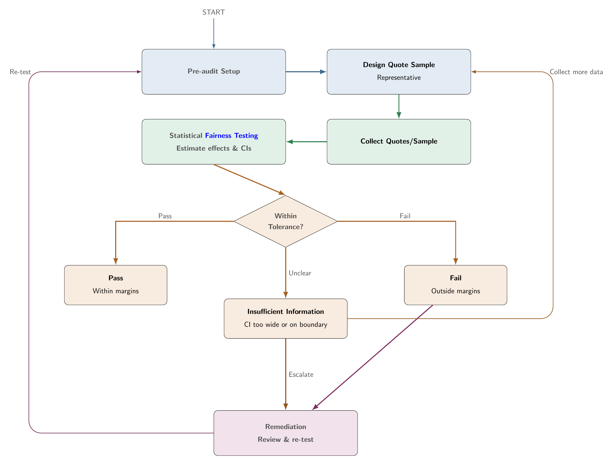

The Fair Pricing Playbook
A practical framework for Responsible AI in algorithmic pricing (2026)
Why fair pricing matters
Algorithmic pricing is now widely used in insurance and financial services, and advances in AI and machine learning have become central to how insurers assess risk, detect patterns in large datasets, and set prices. The fairness concerns this creates are not new, but they take a different form under automated, large-scale systems. Even when protected attributes such as race, gender, and religion are removed from a model, pricing systems can still produce discriminatory outcomes through proxy variables and opaque combinations of inputs that are difficult to trace or challenge. The rapid adoption of AI and big data has created a regulatory grey area: direct discrimination is prohibited, but indirect discrimination through proxies and complex algorithms is not clearly specified or assessed in most markets (Frees and Huang 2023; Xin and Huang 2024).
Regulatory attention to these issues has grown substantially. Colorado and New York have each proposed rules requiring insurers to test pricing algorithms for unfair discrimination, and the European Union has enacted broader AI governance frameworks that apply to insurance. The EU AI Act classifies credit scoring and insurance risk assessment as high-risk AI applications, placing fairness obligations alongside broader requirements for transparency, human oversight, and accountability. Firms that cannot demonstrate fairness face legal exposure, reputational risk, and the practical challenge of defending pricing decisions under regulatory examination.
This playbook translates research from economics, statistics, actuarial science, and machine learning into a concrete four-step workflow that covers the full journey from defining what fairness means, to building fair models, to measuring who actually gains and loses, to auditing a deployed system. Three insurance case studies provide the technical depth needed for implementation.
The four steps
Step 1 · Define fairness
What standard will you be held to, and which fairness criterion will your model target? There are at least six distinct fairness criteria relevant to insurance pricing, and they cannot all be satisfied simultaneously. The choice is a legal and policy decision, not a technical default. This step establishes the standard that Steps 2, 3, and 4 are held to.
Topics covered include direct vs indirect discrimination, proxy variables, individual vs group fairness, and the regulatory spectrum from fairness through unawareness (FTU) to community rating.
Step 2 · Design fair pricing
Once you have chosen a fairness criterion, you need a model that meets it. This step maps criteria to concrete model designs and explains where in the pipeline (inputs, training, or outputs) to enforce fairness, based on what regulation requires.
Topics covered include FTU, demographic parity (DP), conditional demographic parity (CDP), and controlling for the protected variable (CPV), pre- and post-processing interventions, the fairness–accuracy trade-off, and implementations using generalised linear models (GLMs) and XGBoost (a machine learning algorithm based on decision trees).
Step 3 · Assess impact
A model that looks fair on paper can still leave protected groups worse off once prices respond to demand, competition, and regulation. This step asks you to quantify consumer welfare and firm profit by group, going beyond whether predicted costs are equal.
Topics covered include welfare vs price fairness, price optimisation, markup disparities, and who gains and who loses under different regulatory rules.
Step 4 · Audit the system
An audit tests whether a deployed pricing system actually meets the fairness standard. The protocol (criterion, legitimate factors, tolerance bands, sample design) must be fixed before looking at any data. Results are classified as pass, fail, or insufficient information.
Topics covered include conditional demographic parity, proxy discrimination, equivalence testing, corrected statistical inference for algorithmic pricing, and methods for estimating race or ethnicity when direct data are unavailable.
Case studies pair with Steps 2–4. Step 2 links to Case study 1: Fair models. Step 3 links to Case study 2: Welfare implications. Step 4 links to Case study 3: Fairness testing.
The pathway at a glance

The diagram shows how the four steps connect across model design, welfare assessment, and fairness testing.
What the research shows
| Step | Key references |
|---|---|
| 1 · Define fairness | Frees and Huang (2023); Xin and Huang (2024); Krafcheck, Balnozan, and Huang (2026) |
| 2 · Design fair pricing | Xin and Huang (2024) |
| 3 · Assess impact | Huang, Shimao, and Khern-am-nuai (2026); Huang and Shimao (2026) |
| 4 · Audit the system | Huang and Hooker (2026); Xin, Hooker, and Huang (2026); Xin, Hooker, and Huang (2025) |
End-to-end audit flow
Step 4 follows an integrated Plan, Audit, Decide, and Improve protocol (Huang and Hooker 2026). All design choices are fixed before examining data.

| Phase | Actions |
|---|---|
| Plan | Select criterion (PD or CDP), legitimate factors, tolerance bands, representative sample |
| Audit | Collect prices and run statistical fairness tests with corrected inference |
| Decide | Pass, insufficient information, or fail (equivalence testing) |
| Improve | Remediate and re-test. Collect more data if result is unclear |
Full detail is in Step 4: Audit the system.
About the author

Dr. Fei Huang
Dr. Fei Huang is an Associate Professor (with tenure) in Risk and Actuarial Studies at UNSW Business School. She holds degrees from Xiamen University (BSc), the University of Hong Kong (MPhil), and the Australian National University (PhD). Her research sits at the intersection of responsible AI, insurance, and data-driven decision-making, with emphasis on insurance and retirement systems that stay fair, sustainable, and resilient amid technological and climate change. She draws on statistics, machine learning, economics, and actuarial science to develop approaches that are accurate, interpretable, and equitable.
Her work has been recognised with awards including the Australian Business Deans Council Award for Innovation and Excellence in Research, the Dean’s Award for Distinction, the North American Actuarial Journal Best Paper Award, and the Actuaries Institute Volunteer of the Year Award, and is supported by competitive funding such as Australian Research Council Discovery Projects and the National Industry PhD Program. She is a columnist for Actuaries Digital, works with industry and government on topics from fair pricing to longevity and climate resilience, and has advised regulators internationally, including as an invited expert at the New York State Assembly public hearing on AI in insurance. At UNSW she teaches actuarial data science and responsible AI and has received multiple teaching excellence awards.
Acknowledgements
The author thanks Xi Xin for his support in preparing these materials, and acknowledges co-authors and collaborators Giles Hooker, Hajime Shimao, Warut Khern-am-nuai, Eric Krafcheck, and Igor Balnozan.
How to cite
To cite this playbook in academic work, use the APA format below.
Huang, F. (2026). The Fair Pricing Playbook: A practical framework for Responsible AI in algorithmic pricing. SSRN. https://papers.ssrn.com/sol3/papers.cfm?abstract_id=6955039
BibTeX
@misc{huang2026fairpricingplaybook,
title = {The Fair Pricing Playbook: A practical framework for
Responsible AI in algorithmic pricing},
author = {Huang, Fei},
year = {2026},
publisher = {SSRN},
doi = {10.2139/ssrn.6955039},
url = {https://papers.ssrn.com/sol3/papers.cfm?abstract_id=6955039}
}Open source
This playbook is fully open source under CC BY 4.0. All source files — step pages, case study code, bibliography, and site configuration — are available at github.com/feihuangFH/fair-pricing-playbook.
You are free to fork the repository, adapt the framework for your own market or product, and reproduce or extend the case studies. Attribution is required.
License
Materials are licensed under CC BY 4.0. See LICENSE.